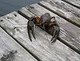

astacidae

Definition: Astacidae is a family of freshwater crayfish native to Europe and western North America. The family is made up of four extant (living) genera: The genera Astacus (which includes the European crayfish), Pontastacus (which includes the Turkish crayfish), and Austropotamobius are all found throughout Europe and parts of western Asia, while Pacifastacus is found on the Pacific coast of the United States and British Columbia and includes the signal crayfish and the Shasta crayfish.
Source: Wikipedia
Wikipedia Page
Wikidata Page